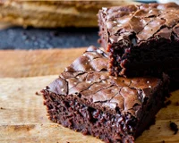

Para essa receita você vai precisar dos seguintes ingredientes: * 3 ovos grandes * 1 xícara de chá de açúcar (200 gramas) * 2/3 de xícara de chá de manteiga ou margarina (150 gramas) * 1/4 de colher de chá de sal * 1 e 1/3 de xícara de chá de farinha de trigo (160 gramas) * 2 xícaras de chá de achocolatado em pó (280 gramas)
-Modo de preparo: Aqueça o forno: Preaqueça a 180°C e prepare uma forma pequena untada com manteiga e polvilhada com chocolate em pó. Bata a massa: Em uma tigela, misture bem os ovos, o açúcar e a manteiga derretida com um batedor de arame até formar um creme claro. Adicione os secos: Junte o chocolate em pó, a farinha de trigo e a pitada de sal. Incorpore: Misture tudo delicadamente com uma espátula apenas até a massa ficar homogênea e brilhante, sem bater demais. Asse: Despeje na forma e leve ao forno por cerca de 25 a 30 minutos.